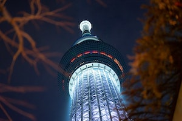

Tokyo Kart
Extremely exciting and a must have experience when you visit Tokyo.
Dress up in your favorite character costume, playing the music of your choice and drive through the city of Tokyo.
All eyes on you guaranteed!
Cost: USD 80$ Per Person
Rated: 18+
teamLab Borderless
teamLab Borderless is a museum of artworks that form one borderless world.
Artworks move out of rooms, communicate with other works, influence, and sometimes intermingle with each other with no boundaries.
Cost: 4-14 years old: 8$ | Adults: 25$
Rated: Everyone
Tokyo DisneySea
Tokyo DisneySea is a fantasy theme park in Tokyo Disney Resort that is unique to Japan.
Inspired by the myths and legends of the sea, Tokyo DisneySea is made up of seven themed ports of call:
Mediterranean Harbor, Mysterious Island, Mermaid Lagoon, Arabian Coast, Lost River Delta, Port Discovery and American Waterfront.
Cost: 4-11 years old: USD 40$ | 12-17 years old: USD 55$ | Adults: USD 70$
Rated: Everyone

Tokyo SkyTree
One of Tokyo’s most iconic modern landmarks is the Tokyo SkyTree, both a symbolic tower and one of the most popular tourist attractions.
Upon completion in 2012, the Tokyo SkyTree was the tallest structure in Japan and also officially recognized as the tallest tower in the world.
Cost: 6-11 years old: USD 12.50$ | 12-17 years old: USD 20$ | Adults USD 25$
Rated: Everyone
GUNDAM
Gundam is iconic in Japan, and regardless if you watch anime or not, you should know the name.
Visiting the life-size Gundam statue in Odaiba Tokyo is the best way to get a monumental dose of Japanese otaku and pop culture!
Cost: Children: USD 8.50$ | Adults: USD 15$
Rated: Everyone
Studio Ghibli Museum
In Tokyo, you’ll find the one-of-a-kind Ghibli Museum.
A fantastic and whimsical museum dedicated to the legendary Studio Ghibli film studio (often considered “Japan’s Disney”).
Cost: 3 & Under: FREE | 4-6 years old: USD 1$ | 7-12 years old: USD 3$ | 13-18 years old: USD 5.50$ | Adults: USD 8$
Rated: Everyone